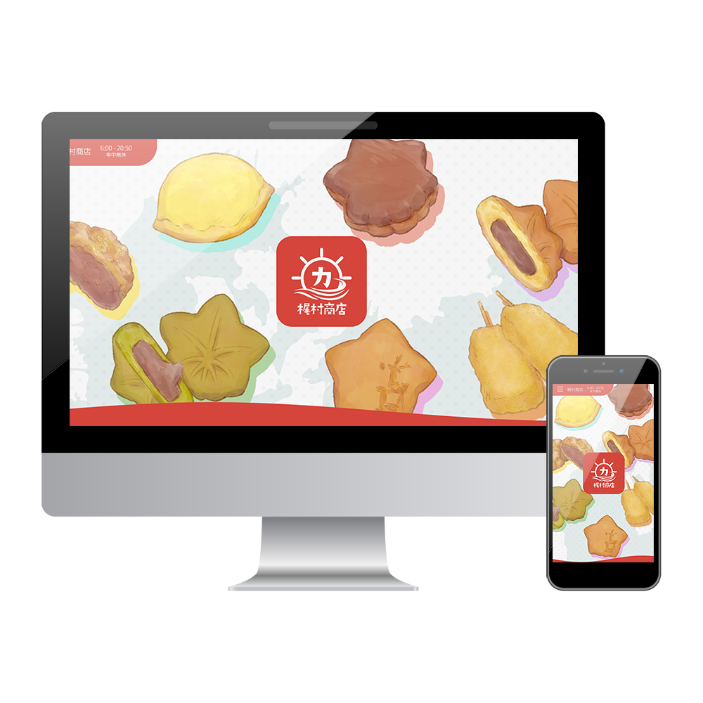

梶村商店Webサイト
(卒業制作)
--About
職業訓練校の卒業制作で「広島港のお土産店 梶村商店」のWebサイトをチーム制作しました。
サブディレクターを担当して、デザインや進行の補佐、商品画像の加工、サイト内文章の作成等を担当しました。
--Design Concept
ペルソナの設定
事前の聞き取りから、お土産を購入する客層等の情報を得て、まずは以下のペルソナを設定しました。
- ・年齢：27歳
- ・性別：女性
- ・居住地：愛媛県在住
- ・ライブの為に広島を訪れて、帰りにお土産を買う店を探している。
- ―この人がお土産店を検索するのはいつか？
- 当日の船の中や、帰る直前→モバイルファーストのサイト作り
- ―この人の欲しい情報は何か？
- 取り扱っているお土産の情報→お店の歴史や周辺情報の優先度は高くない
ある程度方針を固めてから、お土産物の情報が分かりやすく、アニメーションを効果的に使用して訪れたいと思えるサイトを目指しました。
デザイン・コピー

【主な担当箇所】
- ・ローディング画面のキャッチコピーアニメーションをAffter Effectsのテキストアニメーションで作成し、PNGアニメーションにしました。
- ・茶色が多いお土産の写真やイラストを、ドロップシャドウや背景にカラフルな色を使うことで、華やかに、飽きずに視線誘導できる作りにしました。
- ・上記の通りカラフルな配色にしたことで、
「広島の思い出を 色とりどりのお土産とともに」というコピーでお店の紹介をまとめました。 - ・商品詳細部分、ハッシュタグ、Q&Aの文章作成。商品画像の加工。
- 制作期間
- 4週間
- 使用ツール
- Illustrator/Photoshop/After Effects/Figma/VS CODE